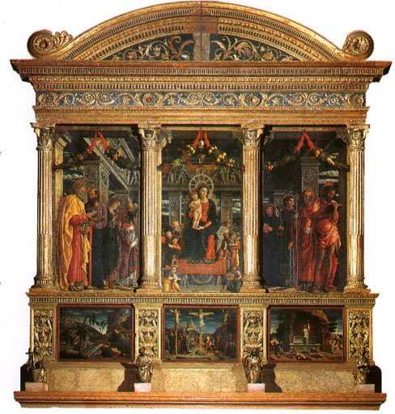
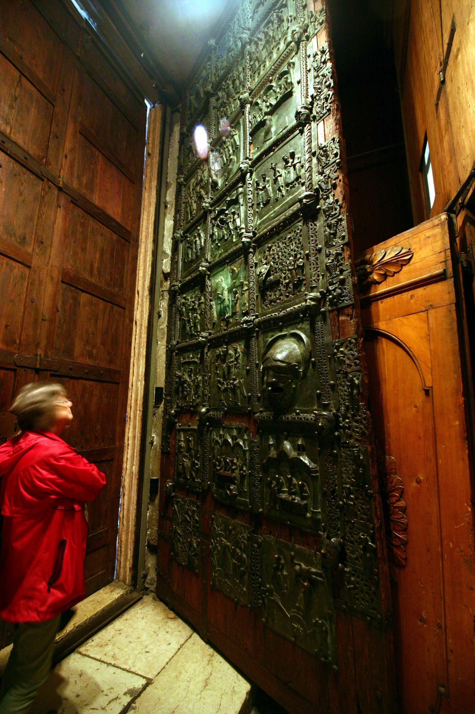

供奉维罗纳主保圣人圣泽诺的罗曼式大教堂（12 世纪重建于 1117 年地震后），北意大利罗曼式建筑的原型之一：赭黄与乳白的条纹立面、悬挑的木顶（倒扣船形）、著名的青铜门与曼特尼亚《圣泽诺祭坛画》--文艺复兴透视法早期的分水岭。
看点路线
Il Percorso
- 1立面看双色条纹与玫瑰窗（“命运之轮”）
- 2青铜门的 48 块浮雕：中世纪铁匠的圣经连环画
- 3主祭坛：曼特尼亚《圣泽诺祭坛画》--站在中间偏左看透视灭点
- 4地下室：微笑的圣泽诺像与真十字架传说
- 5抬头：13 世纪木顶像一艘倒扣的船
重点展品
San Zeno · 6 件必看

《圣泽诺祭坛画》
曼特尼亚 25 岁左右的杰作：三层结构、大理石框架“画中画”、严格单点透视--文艺复兴空间观在北意的第一次完整亮相。注意圣母与圣徒脚下那道虚空间：仿佛只是墙上开了一扇真窗。

青铜门
48 块青铜浮雕讲旧约与新约故事--中世纪工匠的“连环画圣经”。著名的“打铁的亚当”？不，最出名的是左门下方那些怪异的羊头与藤蔓：罗曼式艺术里不受教义约束的民间想象力。
被拿破仑拆走的 predella
祭坛画底部的三块叙事条板（基督受难等）1797 年被拿破仑军队拆走：《受难》今在卢浮宫、《客西马尼园》在图尔、《复活》在美国--祭坛画的“下部”至今散落三国。主画框上的空位就是那段历史的疤。
船形木顶
中殿的木天花板像一艘倒扣的船：由 28? 根横梁组成，深蓝底绘星与先知--造船民族（阿迪杰河与威尼斯双重传统）把“船”搬进了教堂。
地下室与微笑的圣泽诺
地下室中央立着 12 世纪的圣泽诺坐像--中世纪雕塑里罕见的“微笑”圣徒（据传是异教雕像改的）。传说摸他的戒指（藏在栏杆内）能治病；考古确认地下埋着公元 4 世纪的早期教堂原址。
玫瑰花窗与“命运之轮”
立面玫瑰窗的轮辐上是六个人物：从攀升到坠落的命运之轮--中世纪人对人生无常的图像表达。窗的上方是异兽与先知浮雕：罗曼式立面的“热闹”一直开到檐口。
历史故事
Le Storie
壹曼特尼亚的"开窗"
曼特尼亚 25 岁时画的《圣泽诺祭坛画》（1456-59）：三层结构、大理石框架如同一扇真窗--你透过它看到圣母与圣徒站在一个真实空间里。
这是北意大利第一次把"单点透视"完整地用在祭坛画上。此前（如蜡染画风格? 国际哥特）的圣像是"平面符号"，曼特尼亚把他们变成了"在场的人"。站在中殿中线上偏左看：透视灭点正好落位，画与建筑融为一体。
贰被拿破仑拆走的三块
祭坛画底部的三块叙事条板（predella）1797 年被拿破仑军队拆走：基督受难今在卢浮宫、客西马尼园在图尔（法国）、复活在布卢明顿（美国）。
主画框下方至今留着三块空位--那是那段历史的疤。一件文艺复兴杰作被三个国家的博物馆"分食"，原址只剩框架与主画。
叁青铜门：铁匠的圣经
大门上的 48 块青铜浮雕（11-12 世纪）讲旧约与新约故事--中世纪工匠的"连环画圣经"。有识字率不高的年代，门就是"圣经课的教材"。
最有趣的是左门下方：羊头、藤蔓与怪异的动物--罗曼式艺术里不受教义约束的民间想象力。这些形象可能来自北欧与伦巴第的民间传说。
肆1117 年地震后的重建
1117 年的大地震摧毁了维罗纳大量建筑，包括当时的圣泽诺教堂。现建筑是 1120-1138 年重建的罗曼式主体--赭黄与乳白的条纹立面就是那个时代的配色。
建筑师保留了早期基督教堂的规模与朝向，但在结构上"加固"：厚墙、少窗、稳如磐石--中世纪人对地震的建筑学回答。
伍倒扣的船
中殿的木天花板像一艘倒扣的船：14 世纪初的工匠把造船技术用在了教堂顶上--深蓝底绘星与先知。
维罗纳是阿迪杰河的水运城市（后来又与威尼斯结盟）："船"是这座城市的集体记忆。把船搬进教堂天花板，是水城对信仰的翻译。
陆微笑的圣泽诺
地下室的圣泽诺坐像（12 世纪）带着中世纪雕塑中罕见的微笑--据传是从一座异教雕像改刻的。
传说他曾在阿迪杰河洪水时奇迹般地止住水流，手里拿着的不是权杖而是一条鱼杆--他是渔夫与船工的主保圣人。摸他的戒指（藏在栏杆内）据说能治病。
柒命运之轮
立面玫瑰窗的轮辐上是六个人物：从攀上轮顶的人到坠落的骨架--中世纪人对"命运无常"的图像表达（Roleta Fortunae）。
12 世纪的信众走进教堂前，先在门口看一眼这扇窗：人生如轮，今日在上明日可能坠底。中世纪的"心灵按摩"就刻在立面上。
捌Zeffirelli 的婚礼场景
1968 年 Zeffirelli 版《罗密欧与朱丽叶》的婚礼场景在圣泽诺教堂拍摄--这座罗曼式教堂成了"维罗纳爱情宇宙"的一部分。
影迷来此巡礼时通常发现：教堂比电影里更安静更美。如果行程含朱丽叶之家，来圣泽诺看"婚礼的另一半"就把故事补全了。
玖罗曼式的"热闹"
圣泽诺立面的雕刻从柱头一直开到檐口：先知、狮子、奇兽与藤蔓--罗曼式艺术不追求"简洁"，而是用密集的叙事填满每一寸石头。
这种"热闹"与哥特的轻盈、文艺复兴的秩序形成对照。看罗曼式教堂的技巧：沿着立面从下往上"读"，每一层都有新的角色登场。
拾广场的本地生活
圣泽诺教堂前的广场（Piazza San Zeno）没有游客人潮：本地人的面包房、几桌外摆与一棵大树。
教堂广场边的咖啡价格是老城中心的一半。看完曼特尼亚出来坐半小时--这是维罗纳最"接地气"的角落。
参观贴士
Consigli Pratici
- 曼特尼亚祭坛画的最佳观看点：中殿中线上略偏左，透视灭点正好落位
- 教堂前的广场（Piazza San Zeno）安静且本地化：广场咖啡是本地人价
- 地下室有真十字架残片的传说展陈（中世纪圣髑叙事）
- 1968 年 Zeffirelli 版《罗密欧与朱丽叶》的婚礼场景在此拍摄--影迷巡礼点
- 回程顺路看古城门 Porta Palio（圣米凯利设计）或沿河走回老城（20 分钟舒服路线）
顺路同游
Da Non Perdere